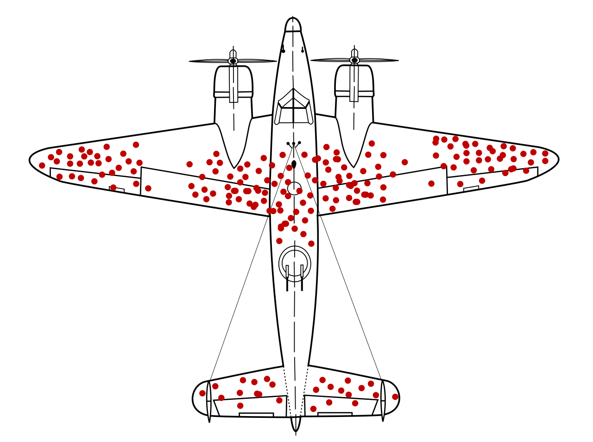

…and all my friends agree with me.
Read section 1.3 – Sampling principles and strategies. Review vocabulary on next two slides.
Which of these should a political polling organization accomplish in order to responsibly estimate the outcome of an upcoming election?
(Good political polling is very, very hard!)
We want to estimate the average household grocery bill in St. Lawrence county. What is the population of interest?
You plan to sample 100 households. What are some natural sources of sampling bias and how could you mitigate them?
You want to measure how much time an average university student spends reading. What is the population of interest (in your opinion)? What are some natural sources of sampling bias and how could you mitigate them?
Explain how each observation or inference is vulnerable to survivorship bias.
Abraham Wald famously studied aircraft damage during WWII. He examined post-mission bullet holes on bombers. (Image is compilation across many planes.)

Source: By Martin Grandjean (vector), McGeddon (picture), US Air Force (hit plot concept) - Own work, CC BY-SA 4.0, Used with permission.
Question: The bomber can carry a small bit of extra weight for shielding. Where should extra shielding be placed to protect aircraft?
Explain how almost every type of sampling bias applies to this fictional scenario:
“Here at Dominant Dynamics Corp., we pride ourselves on inclusivity, especially in June! We set up a survey table in our corporate lobby where we interviewed employees: “Attention LGBTQIA+ employees! Is this a safe and supportive environment for you?”
You want to survey college students about relationship viewpoints.
Ana: We’ll each pick a residence hall and knock ten random doors within it.
Biljana: Let’s ask the registrar for a list of 100 random current students. Then we can email them!
Marija: Let’s coordinate with five random professors, and survey everybody in their classes.
Dragan: It may depend on relationship status. We need to get a sample with the right number of people who are single, dating, married, etc.
Bonus: To generate their names I picked a nation at random, then chose four random names common within that nation. What sampling strategy did I use?
Which is most correct?
Uche asserts: “Large sample sizes are better for my purposes.”
Abike asserts: “Small sample sizes are better for my purposes.”
Why might both speakers be correct?
On Webwork, assignment 4-5: Sampling and Sample Bias.